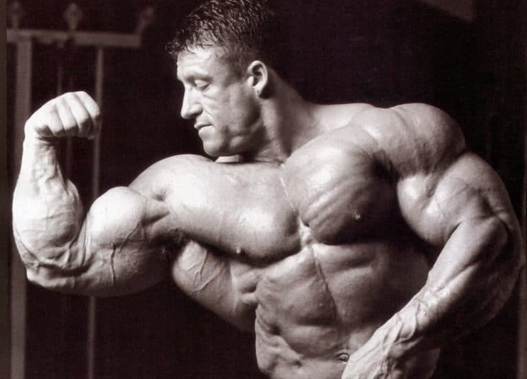

-
Larry Scott
- 12/10/38 - 08/03/2014 (75 anos)
- - Títulos: 2 (1965-66)
- - Maior peso: 94 kg
- -Foi o primeiro campeão do Mr. Olympia. Era conhecido por ter 50cm de braço, algo raro na época. O exercício "rosca Scott" recebe o nome em homenagem ao fisiculturista.
-
Sergio Oliva
- 04/07/1941 - 12/11/2012 (71 anos)
- - Títulos: 3 (1967-69)
- - Maior peso: 109 kg
- - Sergio é o único cubano a ganhar o Olympia 3 vezes, e também o único a ganhar um Olympia em cima de Arnold Schwarzenegger, com quem tinha uma certa rivalidade.
-
Arnold Schwarzenegger
- - Nasc.: 30/07/1947 (76 anos)
- - Títulos: 7 (1970-1975, 1980)
- - Maior peso: 108 kg
- - Além de um grande fisiculturista, Arnold também foi um ator de Hollywood de sucesso e é ex-governador da Califórnia, onde governou por aproximadamente oito anos.
-
Franco Columbu
- 07/08/1941 - 30/08/2019 (78 anos)
- - Títulos: 2 (1976, 1981)
- - Maior peso: 90 kg
- - Foi bicampeão no Olympia em 1976, quebrando a sequência de Arnold, e em 1981, um ano após a aposentadoria de Arnold. Antes de competir, Columbu competia em campeonatos de levantamento de peso, ganhando vários títulos.

-
Frank Zane
- - Nasc.: 28/06/1942 (81 anos)
- - Títulos: 3 (1977-79)
- - Maior peso: 86 kg
- - Considerado um dos físicos mais simétricos e estéticos da história do Olympia, e também o criador da pose "vácuo", em que o atleta solta o ar e exibe a caixa torácica e a linha de cintura fina.
-
Chris Dickerson
- 25/08/1939 - 23/12/2021 (82 anos)
- - Títulos: 1 (1982)/li>
- - Maior peso: 86 kg
- - Foi o atleta mais velho a ganhar um Olympia, com 43 anos. Antes de entrar para o mundo do fisiculturismo, Chris sempre gostou de artes, estudou música e se desenvolveu como um cantor de ópera.
-
Sammir Bannout
- - Nasc.: 07/11/1955 (68 anos)
- - Títulos: 1 (1983)
- - Maior peso: 88 kg
- Apelidado de Leão do Líbano, Sammir foi o primeiro e único libanês a ganhar um Mr. Olympia. Era conhecido por ir ao extremo nos treinos e por ter uma alimentação ruim.
-
Lee Haney
- - Nasc.: 11/11/58 (65 anos)
- - Títulos: 8 (1984-1991)
- - Maior peso (off-season): 118 kg
- - Lee foi o primeiro fisiculturista na história a ganhar oito vezes consecutivas o Olympia.

- - Nasc.: 19/04/62 (61 anos)
- - Títulos: 6 (1992-1997)
- - Maior peso: 127 kg
- - Dorian conheceu a musculação quando foi mandado para um centro de detenção, onde, em apenas 6 meses de treino, já era considerado o mais forte entre os detentos.
Dorian Yates
.jpg "Ronnie Coleman")
-
Ronnie Coleman
- - Nasc.: 13/05/64 (59 anos)
- - Títulos: 8 (1998-2005)
- - Maior peso: 135 kg
- - Segundo na história a ganhar oito vezes consecutivas o Olympia. Era conhecido por sempre treinar com pesos muito altos, quase se comparando a um strongman; tanto que quebrou um recorde de maior peso levantado em um Leg Press (1043 kg), e ainda fez 8 repetições.

-
Jay Cutler
- - Nasc.: 03/08/73 (50 anos)
- - Títulos: 4 (2006-2007, 2009-2010)
- - Maior peso: 141 kg
- - Antes de conquistar o Olympia em 2006, Jay teve 4 vice-campeonatos, perdendo em todos para Ronnie Coleman. Foi conhecido por ter pernas bem definidas e musculosas.
-
Dexter Jackson
- - Nasc.: 25/11/1969 (53 anos)
- - Títulos: 1 (2008)
- - Maior peso: 111 kg
- - É o responsável por quebrar a sequência de Jay Cutler, derrotando-o em 2008. É um exemplo de persistência e dedicação.

-
Phil Heath
- - Nasc.: 18/12/79 (43 anos)
- - Títulos: 7 (2011-2017)
- - Maior peso: 125 kg
- - Já na sua estreia como Pro, Phil conseguiu ficar em terceiro Mr. Olympia e um vice-campeonato no Arnold Classic, a segunda maior competição de fisiculturismo do mundo.
-
Shawn Rhoden
- 02/04/1975 - 06/11/2021 (46 anos)
- - Títulos: 1 (2018)
- - Maior peso: 116 kg
- - Conhecido como Flexatron, ganhou em 2018 superando Phil Heath. Foi o único jamaicano a ganhar um Mr. Olympia.
-
Brandon Curry
- - Nasc.: 19/10/82 (41 anos)
- - Títulos: 1 (2019)
- - Maior peso: 118 kg
- - Antes mesmo de competir, Brandon já estudava educação física e se aprofundou em estudar hipertrofia muscular e nutrição.
-
Mamdouh Elssbiay (Big Ramy)
- - Nasc.: 16/09/84 (39 anos)
- - Títulos: 2 (2020-21)
- - Maior peso: 148 kg
- - Após apenas 4 anos de treino, Big Ramy já estreava como Pro nas competições, ganhando o New York Pro. É o único egípcio a ganhar o Mr. Olympia duas vezes.
-
Hadi Choopan
- - Nasc.: 26/09/87 (36 anos)
- - Títulos: 1 (2022)
- - Maior peso: 100 kg
- - Conhecido como O Lobo Persa, é o primeiro iraniano a ganhar o Olympia, ficando em segundo na edição atual do campeonato (2023).
-
Derek Lunsford
- - Nasc.: 14/05/93 (30 anos)
- - Títulos: 1 (2023)
- - Maior peso: 109 kg
- - Derek, além de ganhar a edição deste ano na categoria principal, também ganhou na categoria 212. Foi vice no ano passado, me que Choopan ganhou.